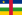
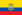
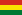

| País | Número de Homicídios a cada 100.000 habitantes |
|---|---|
| 1°: Honduras | 92,7 |
| 2°: Venezuela | 53,8 |
| 3°: El Salvador |
42,7 |
4°:  Jamaica Jamaica |
39,8 |
| 5°: Guatemala | 35.5 |
6°:  Colômbia Colômbia |
31.3 |
| 7°: África do Sul | 30,8 |
8°:  Trinidad e Tabago Trinidad e Tabago |
28,3 |
:9°:  Porto Rico Porto Rico |
26,5 |
10°:  Brasil Brasil |
23,8 |
| 11°: República Dominicana | 22.3 |
12°:  México México |
21.3 |
| 13°: Panamá | 17,5 |
14°:  Namíbia Namíbia |
16,9 |
15°:  Sudão do Sul Sudão do Sul |
13,9 |
| 16°:  República Centro-Africana | 13,2 |
| 17°: República Democrática do Congo | 12,5 |
| 18°:  Equador | 12,5 |
| 19°:  Bolívia | 12.4 |
20°:  Nicarágua Nicarágua |
11,5 |